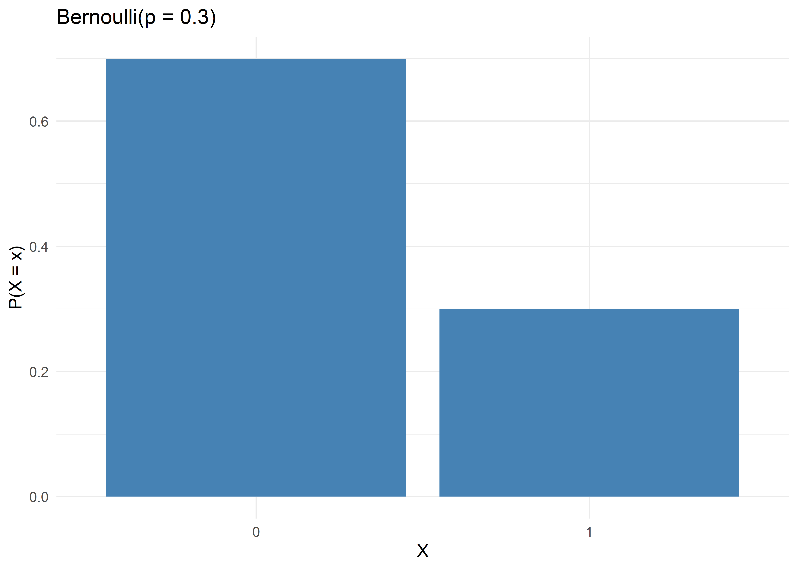
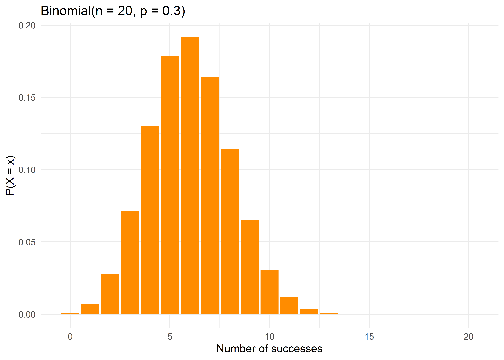
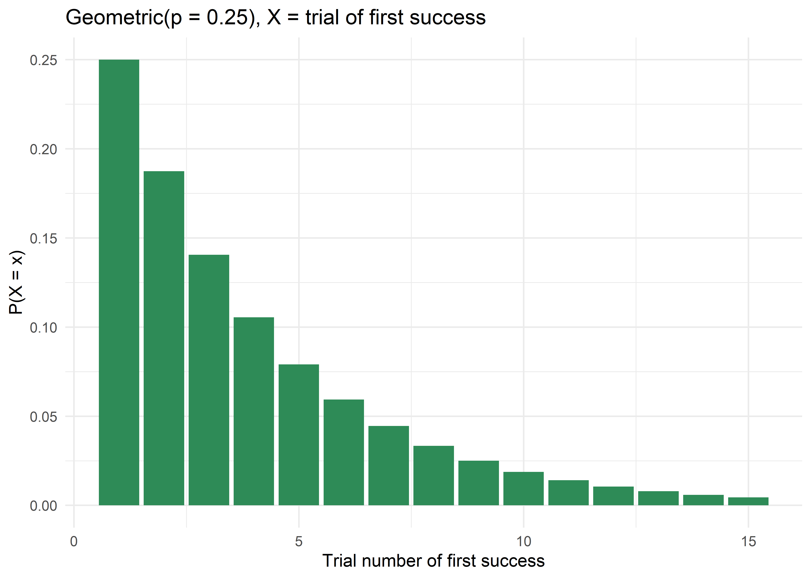
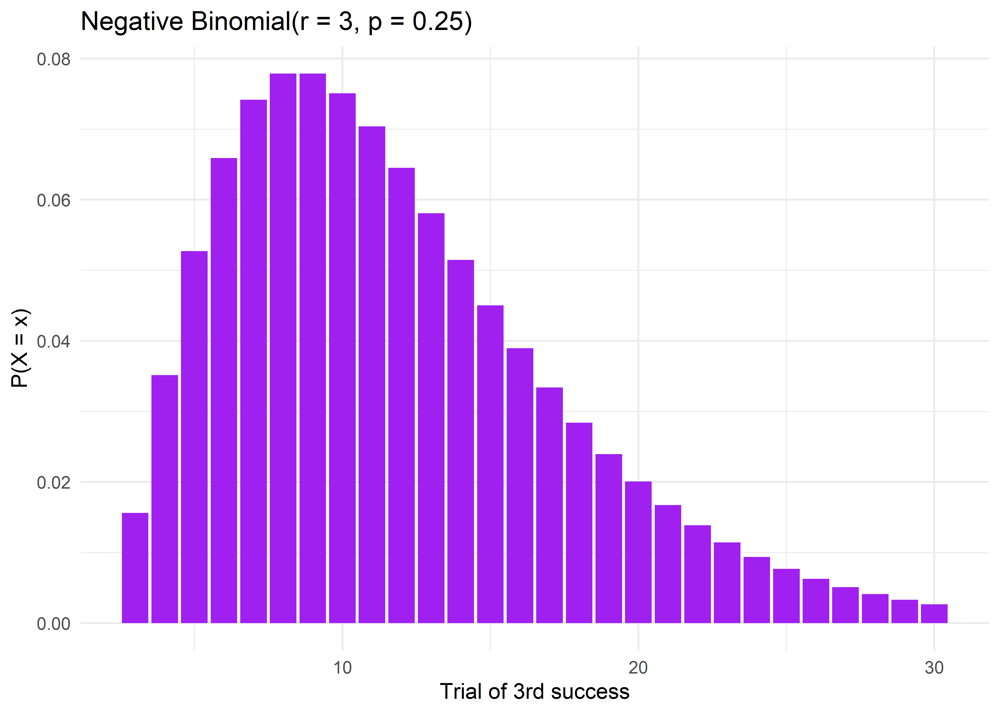
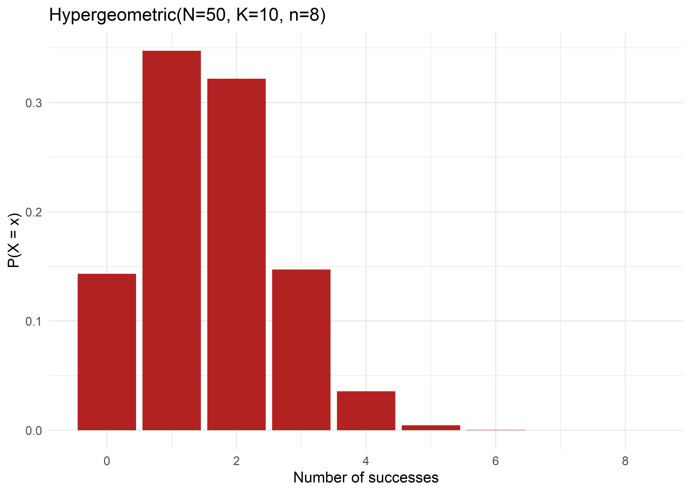
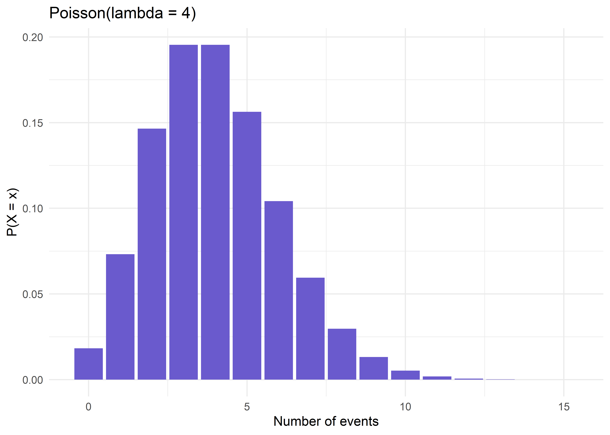

p <- 0.3
x <- c(0, 1)
prob <- dbinom(x, size = 1, prob = p)
ggplot(data.frame(x = factor(x), prob), aes(x, prob)) +
geom_col(fill = "steelblue") +
labs(title = "Bernoulli(p = 0.3)", x = "X", y = "P(X = x)") +
theme_minimal()
Section 7: Discrete Probability Distributions
A random variable is a numeric variable whose value is determined by the outcome of a random experiment. Random variables are denoted with capital letters (\(X\), \(Y\)) and their specific realized values with lowercase letters (\(x\), \(y\)).
For a discrete random variable \(X\), the probability mass function (PMF), \(P(X=x)\), gives the probability that \(X\) takes on each specific value \(x\). A valid PMF must satisfy:
The cumulative distribution function (CDF) is \(F(x) = P(X \le x) = \sum_{k\le x} P(X=k)\).
The expected value (mean) of a discrete random variable is the long-run average value, weighted by probability: \[E(X) = \mu = \sum_{\text{all } x} x\, P(X=x)\]
\[Var(X) = \sigma^2 = \sum_{\text{all }x}(x-\mu)^2 P(X=x) = E(X^2) - [E(X)]^2\]
Worked example: A community health worker screens patients. let \(X\) = number of positive screens out of the first 3 patients tested, with PMF:
\(P(0)=0.20\)
\(P(1)=0.35\)
\(P(2)=0.30\)
\(P(3)=0.15\)
Step 1: Verify PMF sums to 1:
\(0.20+0.35+0.30+0.15=1.00\)
Step 2: \(E(X) = 0(0.20)+1(0.35)+2(0.30)+3(0.15) = 0+0.35+0.60+0.45=1.40\)
Step 3:\(E(X^2) = 0^2(0.20)+1^2(0.35)+2^2(0.30)+3^2(0.15)=0+0.35+1.20+1.35=2.90\)
Step 4:
\(Var(X) = 2.90-1.40^2=2.90-1.96=0.94\)
\(SD(X)=\sqrt{0.94}=0.97\).
Models a single trial with exactly two possible outcomes: “success” (1) or “failure” (0).
\[P(X=x) = p^x(1-p)^{1-x}, \quad x \in \{0,1\}\]
| Parameter | \(p\) = probability of success |
|---|---|
| Mean | \(E(X) = p\) |
| Variance | \(Var(X) = p(1-p)\) |
Derivation of mean:
\(E(X) = 0\cdot(1-p) + 1\cdot p = p\)
Derivation of variance:
\(E(X^2) = 0^2(1-p)+1^2(p) = p\)
\(Var(X) = E(X^2)-[E(X)]^2 = p-p^2=p(1-p)\).
Two-point distribution
Shape depends entirely on \(p\).
Assumes a single trial with a fixed success probability.
Whether a single patient tests positive for a disease (\(p\) = prevalence); whether a single newborn is preterm; the building block for the Binomial distribution.
p <- 0.3
x <- c(0, 1)
prob <- dbinom(x, size = 1, prob = p)
ggplot(data.frame(x = factor(x), prob), aes(x, prob)) +
geom_col(fill = "steelblue") +
labs(title = "Bernoulli(p = 0.3)", x = "X", y = "P(X = x)") +
theme_minimal()
If prevalence of a risk factor 30% (\(p = 0.30\)).
\(P(X=1) = 0.30\)
\(P(X=0)=0.70\)
Mean \(=0.30\)
Variance \(=0.30(0.70)=0.21\)
Models the number of successes in \(n\) independent Bernoulli trials, each with the same probability of success \(p\).
\[P(X=x) = \binom{n}{x}p^x(1-p)^{n-x}, \quad x=0,1,\ldots,n\]
where \(\binom{n}{x} = \dfrac{n!}{x!(n-x)!}\).
| Parameter | \(n\) = number of trials, \(p\) = probability of success |
|---|---|
| Mean | \(E(X) = np\) |
| Variance | \(Var(X) = np(1-p)\) |
Symmetric when \(p=0.5\)
Right-skewed when \(p<0.5\) and left-skewed when \(p>0.5\)
Approaches a Normal shape as \(n\) grows (for fixed \(p\) not too close to 0 or 1). It is a consequence of the Central Limit Theorem.
Number of patients who respond to treatment out of \(n\) treated; number of children vaccinated out of \(n\) eligible; number of surgical-site infections out of \(n\) surgeries.
n <- 20; p <- 0.3
x <- 0:n
prob <- dbinom(x, size = n, prob = p)
ggplot(data.frame(x, prob), aes(x, prob)) +
geom_col(fill = "darkorange") +
labs(title = "Binomial(n = 20, p = 0.3)", x = "Number of successes", y = "P(X = x)") +
theme_minimal()
In a clinic, 30% of screened patients (\(p=0.3\)) are found to have elevated cholesterol. Out of \(n=5\) patients screened today, what is the probability exactly 2 have elevated cholesterol?
Step 1: Identify \(n=5\), \(x=2\), \(p=0.3\)
Step 2: Compute the binomial coefficient: \(\binom{5}{2} = \dfrac{5!}{2!3!} = \dfrac{120}{2\times 6}=10\)
Step 3: Compute \(p^x = 0.3^2 = 0.09\) and \((1-p)^{n-x} = 0.7^3=0.343\).
Step 4: Multiply: \[P(X=2) = 10 \times 0.09 \times 0.343 = 0.3087 \approx 30.9\%\]
Verification in R: dbinom(2, size = 5, prob = 0.3) returns 0.3087.
Mean \(= np = 5(0.3) = 1.5\) patients
Variance \(= np(1-p)=5(0.3)(0.7)=1.05\)
Models the number of trials needed to obtain the first success in a sequence of independent Bernoulli trials.
\[P(X=x) = (1-p)^{x-1}p, \quad x=1,2,3,\ldots\]
(Convention: \(X\) counts the trial on which the first success occurs. An alternative parameterization counts the number of failures before the first success, \(Y=X-1\).)
| Parameter | \(p\) = probability of success per trial |
|---|---|
| Mean | \(E(X) = \dfrac{1}{p}\) |
| Variance | \(Var(X) = \dfrac{1-p}{p^2}\) |
Always right-skewed
Highest probability at \(x=1\), decreasing geometrically thereafter.
Assumes independent trials with constant \(p\), continuing until the first success (a “waiting time” distribution).
Number of blood donors screened until finding one with a specific rare blood type
Number of contact-tracing attempts until successfully reaching a contact.
p <- 0.25
x <- 1:15
prob <- dgeom(x - 1, prob = p) # R's dgeom counts failures before success
ggplot(data.frame(x, prob), aes(x, prob)) +
geom_col(fill = "seagreen") +
labs(title = "Geometric(p = 0.25), X = trial of first success",
x = "Trial number of first success", y = "P(X = x)") +
theme_minimal()
R’s dgeom(k, prob) defines \(k\) as the number of failures before the first success, so to match the “trial number” parameterization above, use dgeom(x - 1, prob).
If 25% of blood donors (\(p=0.25\)) have blood type O-negative, what is the probability that the 4th donor screened is the first one with O-negative blood?
Step 1:
\(x=4\), \(p=0.25\), so \(1-p=0.75\)
Step 2: Apply the PMF
\[P(X=4) = (0.75)^{3}(0.25) = 0.4219\times0.25 = 0.1055 \approx 10.6\%\]
Mean \(= 1/0.25 = 4\) donors (on average, expect to screen 4 donors to find one O-negative).
Variance \(= (1-0.25)/0.25^2 = 0.75/0.0625=12\).
Generalizes the Geometric distribution: models the number of trials needed to achieve the \(r\)-th success.
\[P(X=x) = \binom{x-1}{r-1}p^r(1-p)^{x-r}, \quad x=r,r+1,r+2,\ldots\]
| Parameter | \(r\) = target number of successes, \(p\) = probability of success per trial |
|---|---|
| Mean | \(E(X) = \dfrac{r}{p}\) |
| Variance | \(Var(X) = \dfrac{r(1-p)}{p^2}\) |
Right-skewed (less so as \(r\) increases)
Same independence/constant-\(p\) assumptions as the Geometric distribution (which is the special case \(r=1\)).
Also widely used (in its alternative “count” parameterization) to model overdispersed count data, count data whose variance exceeds its mean, which the Poisson distribution cannot accommodate.
Number of patients that must be screened to identify \(r=3\) cases of a rare disease for a case series.
Modeling overdispersed disease counts (e.g., hospital readmission counts) where a Poisson model underestimates variability.
r <- 3; p <- 0.25
x <- r:30
prob <- dnbinom(x - r, size = r, prob = p) # R counts failures before r-th success
ggplot(data.frame(x, prob), aes(x, prob)) +
geom_col(fill = "purple") +
labs(title = "Negative Binomial(r = 3, p = 0.25)",
x = "Trial of 3rd success", y = "P(X = x)") +
theme_minimal()
Continuing the O-negative blood donor example (\(p=0.25\)): what is the probability that the 6th donor screened is the one who provides the 3rd O-negative unit found (\(r=3\))?
Step 1:
\(x=6\), \(r=3\), \(p=0.25\)
Step 2:
Binomial coefficient: \(\binom{x-1}{r-1} = \binom{5}{2} = 10\)
Step 3:
\(p^r = 0.25^3 = 0.015625\)
\((1-p)^{x-r} = 0.75^3 = 0.421875\)
Step 4: \[P(X=6) = 10\times 0.015625\times 0.421875 = 0.0659 \approx 6.6\%\]
Mean \(= r/p = 3/0.25=12\) donors expected to find 3 O-negative units.
Models the number of successes in \(n\) draws without replacement from a finite population of size \(N\) containing \(K\) successes, used when sampling is done without replacement from a small, finite population (in contrast to the Binomial, which assumes independence/replacement).
\[P(X=x) = \frac{\binom{K}{x}\binom{N-K}{n-x}}{\binom{N}{n}}\]
| Parameter | \(N\) = population size, \(K\) = number of successes in population, \(n\) = sample size |
|---|---|
| Mean | \(E(X) = n\dfrac{K}{N}\) |
| Variance | \(Var(X) = n\dfrac{K}{N}\cdot\dfrac{N-K}{N}\cdot\dfrac{N-n}{N-1}\) |
The variance formula includes the finite population correction factor, \(\dfrac{N-n}{N-1}\), which distinguishes it from the Binomial.
Similar in shape to the Binomial for large \(N\) relative to \(n\) (in fact, the Hypergeometric converges to the Binomial as \(N\to\infty\) with \(K/N=p\) fixed).
Assumes sampling without replacement from a finite, known population.
Selecting a sample of vials for quality control from a finite batch (as in Section 4’s defective-vial example); selecting a committee/sample from a small finite roster of patients with known disease status; capture-recapture population size estimation.
N <- 50; K <- 10; n <- 8
x <- 0:min(n, K)
prob <- dhyper(x, m = K, n = N - K, k = n)
ggplot(data.frame(x, prob), aes(x, prob)) +
geom_col(fill = "firebrick") +
labs(title = "Hypergeometric(N=50, K=10, n=8)", x = "Number of successes", y = "P(X = x)") +
theme_minimal()
A batch of \(N=50\) vaccine vials contains \(K=10\) expired vials. A quality inspector randomly selects \(n=5\) vials for testing (without replacement). What is the probability exactly \(x=2\) are expired?
Step 1:
\(\binom{K}{x} = \binom{10}{2} = 45\)
Step 2:
\(\binom{N-K}{n-x} = \binom{40}{3} = 9880\)
Step 3:
\(\binom{N}{n} = \binom{50}{5} = 2{,}118{,}760\)
Step 4: \[P(X=2) = \frac{45\times9880}{2{,}118{,}760} = \frac{444{,}600}{2{,}118{,}760}=0.2099\approx21.0\%\]
Mean \(= n(K/N) = 5(10/50)=1.0\) expired vial expected in the sample.
Models the number of rare, independent events occurring in a fixed interval of time, space, or exposure, when events happen at a constant average rate \(\lambda\).
\[P(X=x) = \frac{e^{-\lambda}\lambda^x}{x!}, \quad x=0,1,2,\ldots\]
| Parameter | \(\lambda\) = mean (and rate) of events per interval |
|---|---|
| Mean | \(E(X) = \lambda\) |
| Variance | \(Var(X) = \lambda\) |
The Poisson is unique in that its mean equals its variance, an assumption that is often violated in real disease-count data (overdispersion), motivating the use of the Negative Binomial as an alternative.
Right-skewed for small \(\lambda\), approaching a symmetric, Normal-like shape as \(\lambda\) increases.
Assumes:
events occur independently,
at a constant average rate,
two events cannot occur at exactly the same instant,
the number of events in non-overlapping intervals is independent.
Number of new cases of a rare disease reported per month in a district; number of hospital-acquired infections per 1000 patient-days; number of deaths from a rare adverse drug reaction; number of disease outbreaks per year in a region. The Poisson also arises as the limiting distribution of the Binomial when \(n\) is large, \(p\) is small, and \(np=\lambda\) is moderate (the “law of rare events”).
lambda <- 4
x <- 0:15
prob <- dpois(x, lambda = lambda)
ggplot(data.frame(x, prob), aes(x, prob)) +
geom_col(fill = "slateblue") +
labs(title = "Poisson(lambda = 4)", x = "Number of events", y = "P(X = x)") +
theme_minimal()
A district reports an average of \(\lambda=4\) cases of a rare disease per month. What is the probability that exactly 6 cases are reported next month?
Step 1:
\(\lambda=4\), \(x=6\)
Step 2:
\(e^{-\lambda} = e^{-4} = 0.01832\)
Step 3:
\(\lambda^x = 4^6=4096\)
Step 4:
\(x! = 6! = 720\)
Step 5: \[P(X=6) = \frac{0.01832\times4096}{720} = \frac{75.03}{720}=0.1042\approx10.4\%\]
Verification in R: dpois(6, lambda = 4) returns 0.1042.
Probability of zero cases: \(P(X=0) = e^{-4}(4^0)/0! = e^{-4} = 0.0183\).
It means 1.8% chance of no cases reported at all next month.
| Distribution | Models | Parameters | Mean | Variance | Trials fixed? | Sampling |
|---|---|---|---|---|---|---|
| Bernoulli | Single success/failure | \(p\) | \(p\) | \(p(1-p)\) | 1 trial | |
| Binomial | # successes in \(n\) trials | \(n,p\) | \(np\) | \(np(1-p)\) | Yes | With replacement / independent |
| Geometric | # trials to 1st success | \(p\) | \(1/p\) | \((1-p)/p^2\) | No (random) | With replacement / independent |
| Negative Binomial | # trials to \(r\)-th success | \(r,p\) | \(r/p\) | \(r(1-p)/p^2\) | No (random) | With replacement / independent |
| Hypergeometric | # successes in \(n\) draws, finite pop. | \(N,K,n\) | \(nK/N\) | \(n\frac{K}{N}\frac{N-K}{N}\frac{N-n}{N-1}\) | Yes | Without replacement |
| Poisson | # events in fixed interval | \(\lambda\) | \(\lambda\) | \(\lambda\) | N/A (rate-based) |
flowchart TD
Q1{"Are you counting events<br/>per unit time/space<br/>(no fixed 'n')?"} -->|Yes| Poisson["Use Poisson"]
Q1 -->|No, fixed number of trials/draws| Q2{"Sampling with or without<br/>replacement from a<br/>finite, small population?"}
Q2 -->|Without replacement, finite pop.| Hyper["Use Hypergeometric"]
Q2 -->|With replacement / independent trials, or infinite population| Q3{"Are you counting<br/>successes in n fixed trials,<br/>or waiting for success(es)?"}
Q3 -->|"Counting successes in fixed n"| Q4{"n = 1 trial?"}
Q4 -->|Yes| Bern["Use Bernoulli"]
Q4 -->|No, n > 1| Binom["Use Binomial"]
Q3 -->|"Waiting for success(es)"| Q5{"Waiting for 1st success<br/>or r-th success?"}
Q5 -->|"1st success"| Geo["Use Geometric"]
Q5 -->|"r-th success"| NB["Use Negative Binomial"]flowchart TD
Q1{"Are you counting events<br/>per unit time/space<br/>(no fixed 'n')?"} -->|Yes| Poisson["Use Poisson"]
Q1 -->|No, fixed number of trials/draws| Q2{"Sampling with or without<br/>replacement from a<br/>finite, small population?"}
Q2 -->|Without replacement, finite pop.| Hyper["Use Hypergeometric"]
Q2 -->|With replacement / independent trials, or infinite population| Q3{"Are you counting<br/>successes in n fixed trials,<br/>or waiting for success(es)?"}
Q3 -->|"Counting successes in fixed n"| Q4{"n = 1 trial?"}
Q4 -->|Yes| Bern["Use Bernoulli"]
Q4 -->|No, n > 1| Binom["Use Binomial"]
Q3 -->|"Waiting for success(es)"| Q5{"Waiting for 1st success<br/>or r-th success?"}
Q5 -->|"1st success"| Geo["Use Geometric"]
Q5 -->|"r-th success"| NB["Use Negative Binomial"]
Next section will deal with the probability distribution of continuous variables.